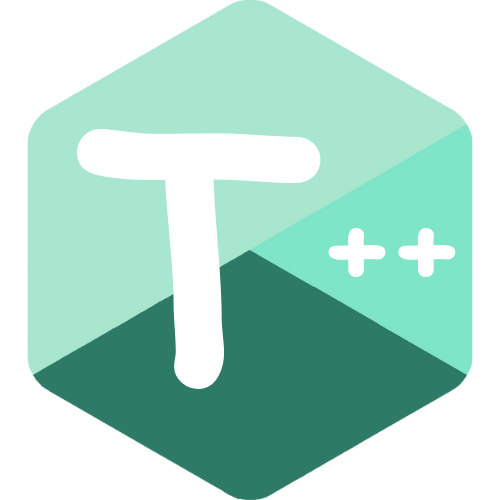
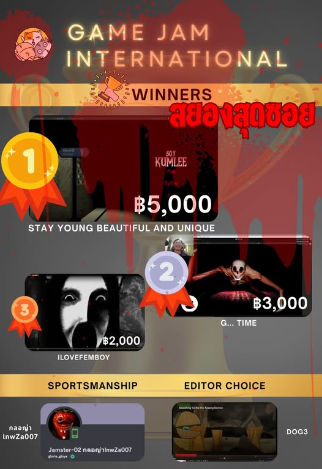
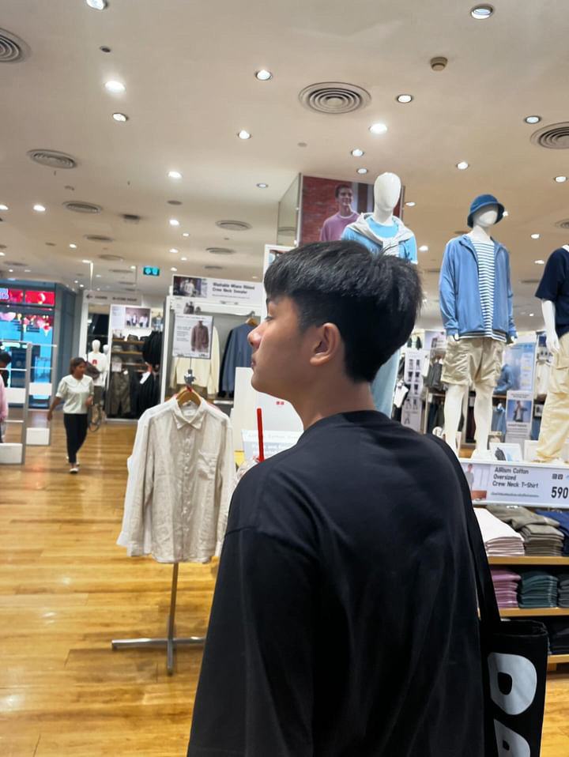

<!DOCTYPE html>
<html lang="th"></html>
<head>
    <meta charset="UTF-8">
    <title>Mentor</title>
    <meta name="viewport" content="width=device-width, initial-scale=1">
  <link rel="stylesheet" href="style.css">
</head>

<body>
    <main class="container">
        
        <section>
            <div class="mentor-header">
                
                <h2 style="text-align: center;">Tdouble.Dev (ธีร์)</h2>
                <p style="text-align: center">Co-founder & Project Director</p>
                <p style="text-align: center"><a class="profile" href="https://tdoubleedev.itch.io/" target="_blank">
                    โปรไฟล์ Itch.io
                </a></p>
            </div>

            <div class="mentor-body">
                <div class="mentor-text">
                    <p>
                        พี่เป็นนักพัฒนาเกมที่ส่วนใหญ่เป็น Game Director ที่คิดค้นสร้างสรรค์ Gameplay
                        ดูแลและจัดการแผนการพัฒนาเกม รวมทั้งออกแบบสิ่งต่างๆที่เกี่ยวกับเกม และพี่ก็ยังมีทักษะในการใช้โปรแกรม Blender สำหรับปั้น 3D และนำเข้าไปในเกม
                    </p>
                    
                    <p>
                        พี่ทำเกมครั้งแรกตอนป.5 ในชุมนุมทำเกมแต่หลังจากคัดเลือกแข่งทำเกมไม่ผ่านก็ไปทำหุ่นยนต์ยาวๆ
                        แต่ช่วงปลายม.6 ที่เหลือเวลาการปั้นพอร์ตไม่มาก พี่จึงกลับมาทำเกมเนื่องจากใช้เวลาที่น้อย
                        ได้ผลงานที่ใหญ่และสะท้อนทักษะด้านการเขียนโปรแกรมหลายๆด้าน รวมทั้งความสนใจในด้านเทคโนโลยี
                        แต่สิ่งที่พี่ได้หลังจากทำเกมคือพี่รักในการทำเกม แต่พี่ไม่มีโอกาสได้มาทำเกมเร็วกว่านี้กว่าจะรู้ตัวอีกทีก็จะเข้ามหาลัย
                    </p>

                    <p>
                        พี่จึงอยากให้น้องๆลองมาลง SKN Game Jam ที่พี่ๆตั้งใจสอนและถ่ายทอดความรู้ด้านการทำเกมให้กับน้องๆ
                        ถึงน้องจะไม่ชนะ แต่น้องก็จะได้ความรู้ ประสบการณ์ ผลงาน และได้ค้นพบตัวเองด้านการทำเกมอย่างแน่นอน
                    </p>
                    
                    <h3 style="font-size: 28px;">ผลงาน</h3>
                    
                    <ul>
                        <li><strong><span class="highlightgold">ชนะเลิศ</span>การแข่งขันสร้างเกม 72 ชั่วโมง Hamster Hub Game Jam International x Eduverse</strong></li>
                        <li><strong><span class="highlightcopper">รองชนะเลิศอันดับ 2 </span>การแข่งขันสร้างเกม 48 ชั่วโมง Nuutor Cup</strong></li>
                        <li><strong>เข้าร่วมการแข่งขันสร้างเกม 48 ชั่วโมง Mini Jame Gam #45 บน itch.io</strong></li>
                        <li><strong>เป็นประธานชุมนุม SKN-ROBOT ปีการศึกษา 2567</strong></li>
                    </ul>

                </div>

                <div class="mentor-img-group">
                    
                    
                </div> 
            </div>
        </section>

        <section>
            <div class="mentor-header">
                
                <h2 style="text-align: center;">Yorooo (ปุณณ์)</h2>
                <p style="text-align: center">Co-founder & Lead Game Development Instructor (Unity)</p>
                <p style="text-align: center"><a class="profile" href="https://yorooo.itch.io/" target="_blank">
                    โปรไฟล์ Itch.io
                </a></p>
            </div>

            <div class="mentor-body">
                <div class="mentor-text">
                    <p>
                        พี่เป็นนักพัฒนาเกมที่เป็นผู้ทำในด้านของ Gameplay ไม่ว่าจะเป็นตัวผู้เล่น และตัวศัตรู พี่ยังมีความสามารถในการ Prompt AI ได้อย่างสุดยอดอีกด้วย ถ้าน้องอยากสร้างเกมง่ายๆด้วย AI พี่จะช่วยอย่างเต็มที่
                    
                    <p>
                        พี่เริ่มการเก็บพอร์ตจากการแข่งขันหุ่นยนต์ แต่สำหรับพี่รู้สึกว่ามันไม่ได้มีประโยชน์ขนาดนั้น เพราะใครๆก็ไปแข่งได้ จนพี่ได้มาสนใจด้านการทำเกมในตอนกลางของม.6 ซึ่งเป็นเวลาที่ช้ามาก 
                        เพราะในอีกไม่กี่เดือนก็ต้องส่งพอร์ตแล้ว พี่เลยอยากหาอะไรบ้างอย่างที่สามารถทำไปแล้วได้พอร์ตและสนุกกับมัน และหลังจากพี่ได้เริ่มทำเกมพี่ได้รู้อย่างนึงที่พี่เสียดายมากคือ NSC ที่พี่ไม่มี พี่จึงรู้สึกเสียโอกาสเป็นอย่างมาก ทำให้พี่ไม่สามารถยื่นพอร์ตมหาลัยบางที่ได้ พี่เลยไม่อยากให้น้องๆพลาดโอกาสนี้ไป
                    </p>

                    <p>
                        พี่จึงอยากให้น้องมาแข่งขัน SKN Game Jam เพราะพี่สามารถช่วยน้องทำเกมได้ภายในเวลาไม่กี่วัน และสามารถต่อยอดน้องๆที่สนใจในด้านนี้ต่อไปได้ และน้องๆสามารถนำความรู้ที่พี่สอนไปต่อยอดในรายการอื่นๆได้อีก
                    </p>
                    
                    <h3 style="font-size: 28px;">ผลงาน</h3>
                    
                    <ul>
                        <li><strong><span class="highlightgold">ชนะเลิศ</span>การแข่งขันสร้างเกม 72 ชั่วโมง Hamster Hub Game Jam International x Eduverse</strong></li>
                        <li><strong><span class="highlightcopper">รองชนะเลิศอันดับ 2 </span>การแข่งขันสร้างเกม 48 ชั่วโมง Nuutor Cup</strong></li>
                        <li><strong>เข้าร่วมกิจกรรม Make it Fun Game เป็นเวลา 3 วัน</strong></li>
                    </ul>

                </div>

                <div class="mentor-img-group">
                    
                    
                </div> 
            </div>
        </section>
        
        <nav class="navbar2">
                <a href="index.html" class="nav-btn">Home</a>
        </nav>
    
    </main>

    <footer>
        <p style="text-align: center;">Website by TdoubleE.Dev (Thanawat Pengmars)</p>
        <p style="text-align: center;">© 2026 SKN Game Jam. All rights reserved.</p>
    </footer>
</body>

